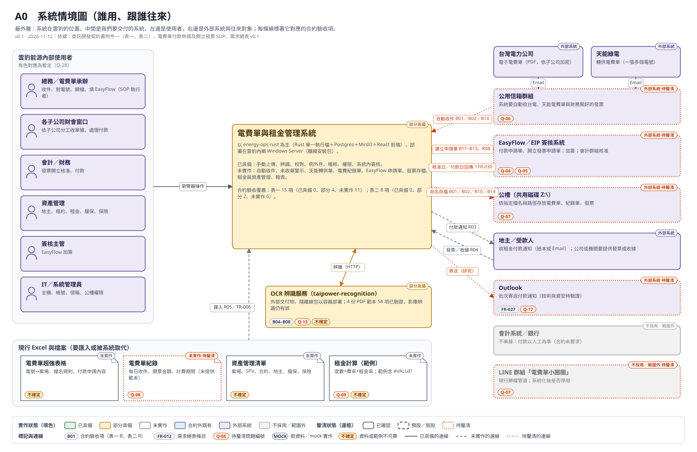
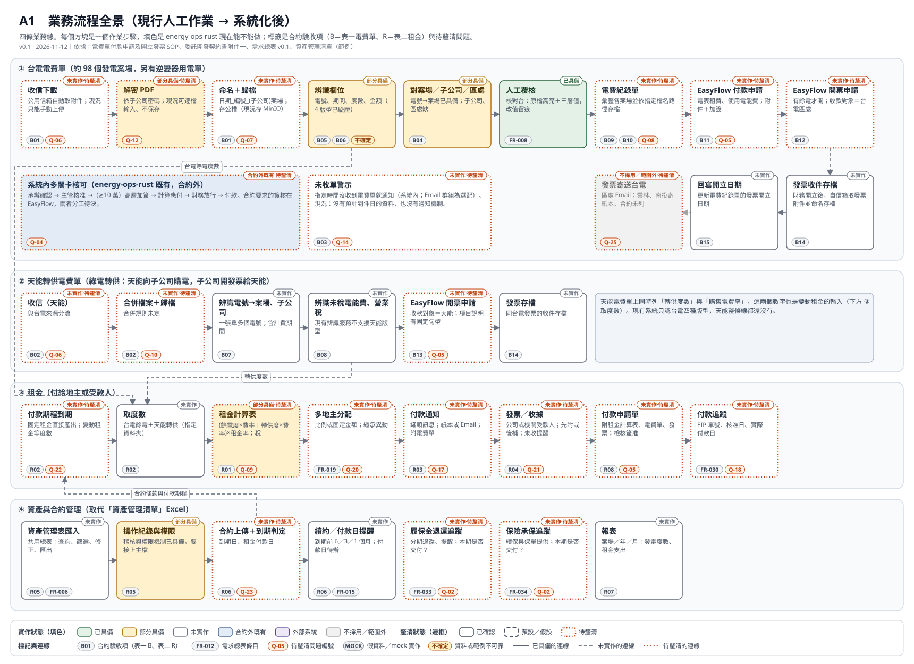
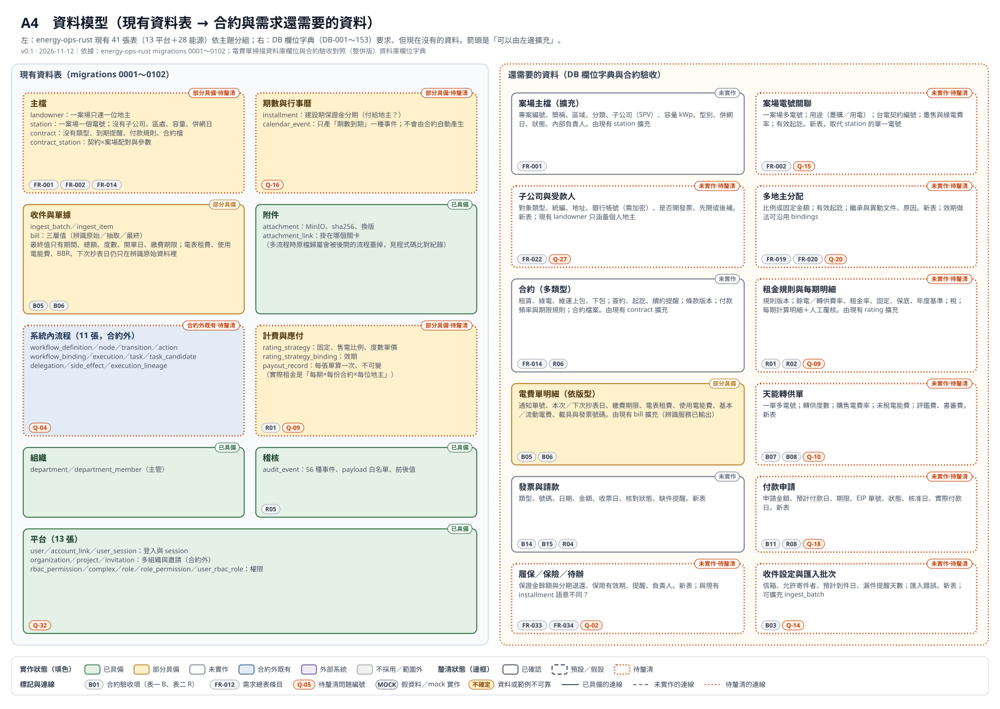
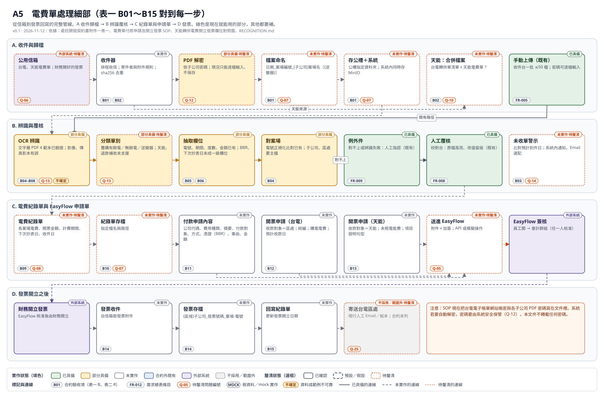
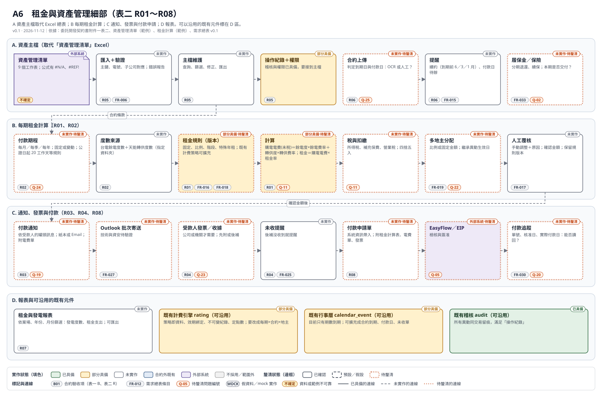
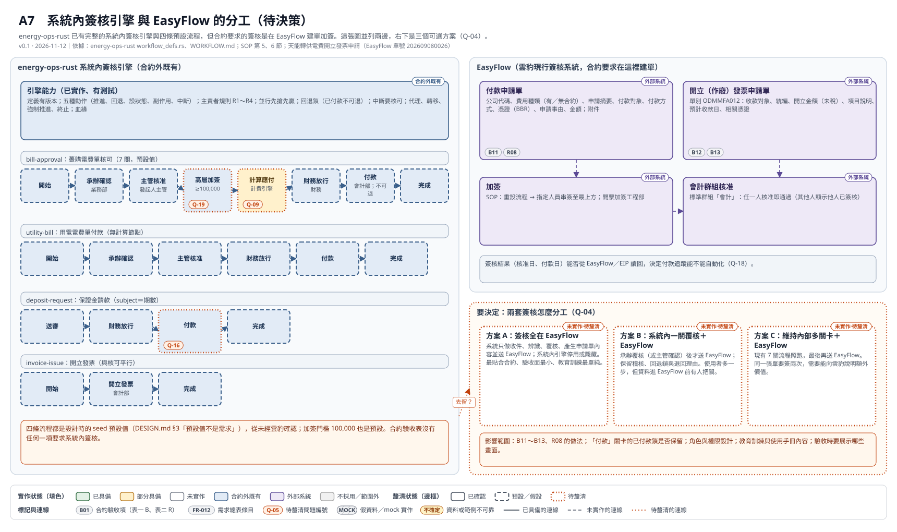

首頁
電費單與租金管理系統 規格文件
這是「電費單與租金管理系統」的規格文件系統（v0.1 盤點版）。它以雲豹委託開發合約的驗收表為基準，盤點三個來源（原版設計文件、App 5、energy-ops-rust）的規格與實作，用顏色與樣式標出每個部分「做到哪」與「定了沒」，並把所有不清楚的地方整理成分批的待釐清問題。
18天截至 2026-11-12，距合約約定的完成並驗收期限（民國 115 年 11 月 30 日）。
表一 電費單驗收項
15 項
已具備 0、部分 3、未實作 12
表二 租金驗收項
8 項
已具備 0、部分 2、未實作 6
待釐清問題
38 題
第一批 13 題要先回覆
假資料與不確定資料
18 筆
示範資料、mock、範例錯誤、未驗證
關鍵發現
一、驗收基準與既有實作錯位
合約驗收表的重心是「自動收件、電費紀錄單、EasyFlow 申請單、發票存檔、租金與資產管理」；energy-ops-rust 投資最多的是系統內多關卡簽核、多組織與完整 RBAC——這些都不在驗收表上。23 個驗收項中，沒有一項完整具備。
二、外部介接全部未定
公用信箱、公槽、EasyFlow、同仁電腦連線、PDF 密碼保管——每一項都要雲豹 IT 開通或決定，而且都還沒有測試環境。它們是時程上最大的不確定。
三、規格資料不完整，部分有錯
電費紀錄單的範本沒有提供；租金計算範例有 #VALUE! 與錯位公式；需求總表是機器轉錄的 v0.1；合約附件版本待核；辨識樣本只驗證過 4 種。這些都要先補齊，驗收才判得出合不合格。
閱讀路徑
| 讀者 | 建議順序 |
|---|---|
| 決策者（甲方 PM） | 專案摘要 → A0 系統情境 → A7 簽核分工 → 第一批問題 |
| 開發者 | A3 應用元件 → A4 資料模型 → 合約驗收對照表 → 實作現況清冊 → 程式碼比對紀錄 |
| 與雲豹確認時 | A1 業務流程全景 → A5 電費單處理 → A6 租金與資產 → 第二批問題（注意：來源檔案清冊標示為機敏的內容不要外流） |
文件目錄
| 文件 | 內容 |
|---|---|
| 專案摘要 | 合約要點、現況一句話、關鍵發現、主要風險、建議的下一步。給決策者的第一頁。 |
| 規格來源與世代 | 三個來源、四個世代、衝突時以誰為準、遠端抓取結果、來源檔案清冊（含機敏標示）。 |
| 圖例與編號規則 | 狀態的顏色與樣式、編號規則、架構圖的讀法。 |
| 名詞表 | 電號、躉購、轉供、子公司、區處、BBR、EasyFlow、公槽等名詞。 |
| 架構圖 A0～A7 | 從系統情境、業務流程、部署、元件、資料，到電費單與租金的細部，以及簽核分工的決策點。 |
| 合約驗收對照表 | 表一 B01～B15、表二 R01～R08、交付 D01～D08：合約原文、現況、缺口、驗收方法草案、待釐清問題。 |
| 需求總表與使用者故事 | FR-001～035、NFR-001～003 的現況與對應驗收；原版設計的 US-1～21。 |
| 待釐清問題（分三批） | Q-01～Q-38；第一批 13 題是排工前必須決定的。 |
| 實作現況清冊 | energy-ops-rust 每個元件的狀態、對合約的意義與證據路徑。 |
| 假資料與不確定資料 | 示範資料、mock、預設值、範例錯誤、未驗證的辨識與容量。 |
| 決策紀錄 | 已經決定的事、誰決定的、在新合約脈絡下是否要重新確認。 |
| 程式碼比對紀錄 | 三個 repo 的遠端抓取結果；App 5 未併修正與 Rust 版的逐項比對。 |
架構圖（全局 → 細節）

A0 系統情境

A1 業務流程全景

A2 部署與容器

A3 應用元件

A4 資料模型

A5 電費單處理細部

A6 租金與資產細部

A7 簽核分工（決策點）
圖例
實作狀態
- 已具備energy-ops-rust 已實作，可直接用於驗收
- 部分具備有基礎，但欄位、流程或格式還不夠
- 未實作驗收需要，目前沒有
- 合約外既有已實作，但合約沒有要求（去留待定）
- 外部系統不在本系統內，需要介接
- 不採用／範圍外舊版或範圍外，不採用
釐清狀態
- 已確認規格已由合約或使用者確認
- 預設／假設預設值或設計者代決，尚未經雲豹確認
- 待釐清有待釐清問題，答案會改變做法
資料標記
- 假資料示範資料、mock 實作或假服務
- 資料不確定範例有錯、未驗證或來源不可靠